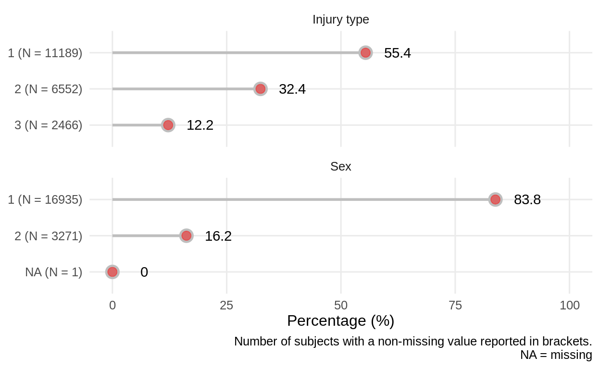
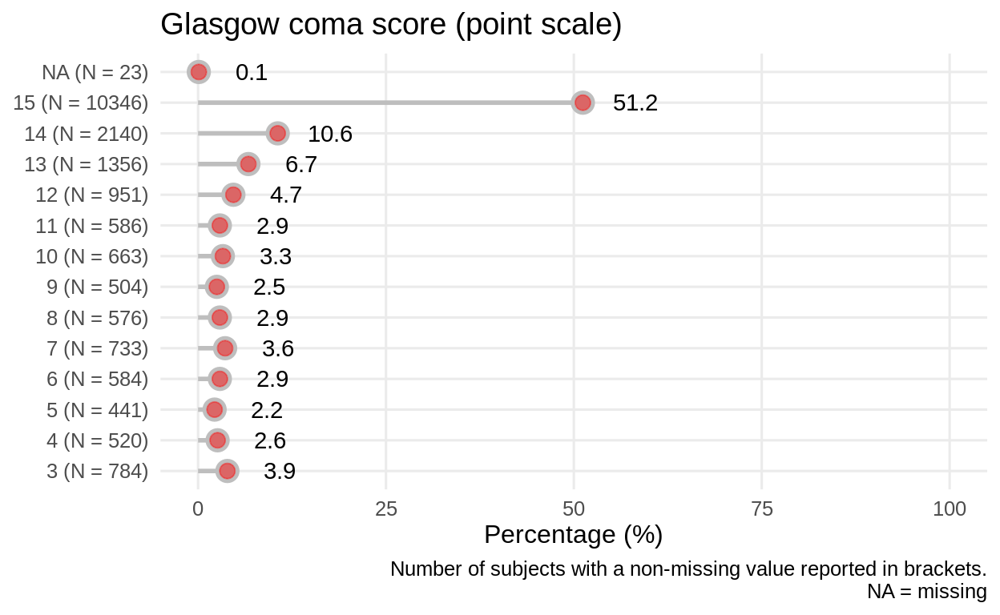
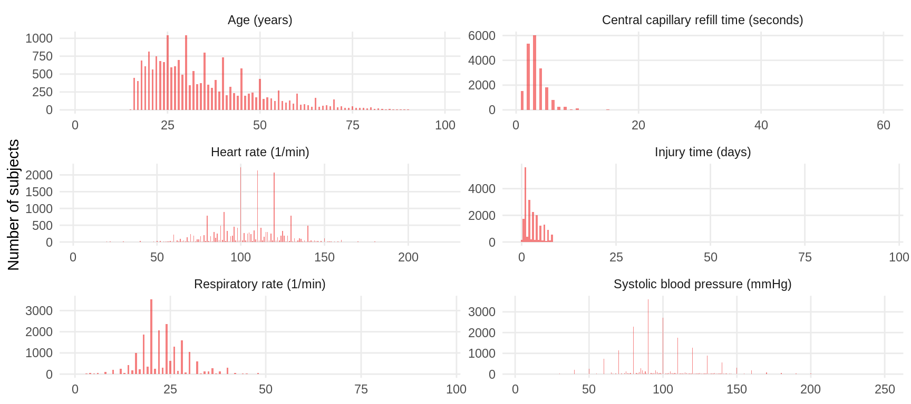

Univariate distribution checks
This section reports a series of univariate summary checks of the CRASH-2 dataset.
Data set overview
Using the Hmisc describe function, we provide an overview of the data set. The descriptive report also provides histograms of continuous variables. For ease of scanning the information, we group the report by measurement type.
Demographic variables
2 Variables 20207 Observations
age: Age years
![image](data:image/png;base64,
iVBORw0KGgoAAAANSUhEUgAAAJcAAAANCAMAAACTvAxuAAAB+1BMVEUAAAABAQECAgIDAwMEBAQFBQUGBgYHBwcICAgJCQkKCgoMDAwNDQ0ODg4PDw8QEBARERESEhIUFBQVFRUWFhYXFxcZGRkbGxscHBwdHR0eHh4fHx8gICAhISEiIiIjIyMkJCQlJSUmJiYnJycoKCgpKSkrKystLS0uLi4vLy8wMDAxMTEyMjIzMzM0NDQ1NTU2NjY3Nzc4ODg5OTk6Ojo7Ozs8PDw9PT0+Pj4/Pz9BQUFCQkJDQ0NFRUVGRkZISEhKSkpLS0tMTExNTU1RUVFSUlJVVVVYWFhZWVlbW1tcXFxdXV1eXl5hYWFiYmJjY2NmZmZnZ2dqampra2tsbGxtbW1ubm5wcHBycnJzc3N0dHR1dXV3d3d5eXl6enp7e3t8fHyAgICFhYWIiIiJiYmKioqLi4uPj4+Tk5OUlJSWlpaXl5eYmJiampqfn5+goKChoaGjo6OlpaWpqamsrKytra2urq6wsLCysrKzs7O0tLS1tbW3t7e4uLi8vLy+vr6/v7/BwcHDw8PExMTGxsbKysrMzMzNzc3Pz8/R0dHS0tLT09PV1dXW1tbY2NjZ2dna2trc3Nzg4ODh4eHi4uLj4+Pm5ubo6Ojq6urr6+vs7Ozu7u7w8PDx8fHz8/P19fX29vb39/f4+Pj5+fn6+vr8/Pz9/f3+/v7////PQKnXAAACGklEQVQ4jcXV21cSURgF8D0oCGUI5TCIhozGTQQcGkCpIM3SBKXsYmZlVnYzu6mVXaELhVlNlhXTbSqr+TPD06IHjaRlxn7ZD+c7Z/3W93KQKShsO6k+VWHjyw/kgrKhg9ThssLGl58lXCKbkr/IC13ve16tMOvPrnvSNMaeqm/OSvMu8VrO9QDXSXedK4rrLXXiMsbuwskrazvE5BAlLXBVxYvieg2+GtEu2BpQE1DSAXzIutITi1ynPCvgEvJlMn0fDTRsZlisMDpQ0QgurBI6KwVhAqNkxLCDVEz780Yi71t/n7z7+qrs7oTPCHc92RcHPY8Sf5m82yCkR3F1Tt45mNvXfj2pFFL/cF/5DubgL/+Niw7TFM8iuO2YvX3etevGL1cCCdKfvhXBBb4S3lo47WCbq5ju9KrogZm9+qnbp7c8y7nYIVLJkeK4LB4YAgpNAOoWncJvQlsER4aZvosP9b2P5NlbctxE3nne8ob02cf/0bURGj/AV8BngssKqwsmntI1lzJby/lW48EzJ4enz+PKk5FLyUn1oRd3xHefX06J0kdJ/j6zlCv7F8XGF31PPUdbwa2G2wCnBfV2mBqha0IJp4J3LVw1sFlhdoH2QMMBXi3cDBx1qLODcUPrBTg1PDRcZjicYJuwjoMqsIYKrdcELYqgrzQUUWyOVvO9YW7f9k39sVD/nsjA8czAYFv8QiYzHssCfgCI5/QnYFqc3wAAAABJRU5ErkJggg==)
| n | missing | distinct | Info | Mean | Gmd | .05 | .10 | .25 | .50 | .75 | .90 | .95 |
|---|---|---|---|---|---|---|---|---|---|---|---|---|
| 20203 | 4 | 84 | 0.999 | 34.56 | 15.55 | 18 | 19 | 24 | 30 | 43 | 55 | 64 |
sex: Sex
| n | missing | distinct |
|---|---|---|
| 20206 | 1 | 2 |
Value male female Frequency 16935 3271 Proportion 0.838 0.162
Physiological measurements
5 Variables 20207 Observations
sbp: Systolic Blood Pressure mmHg
![image](data:image/png;base64,
iVBORw0KGgoAAAANSUhEUgAAAJcAAAANCAMAAACTvAxuAAABlVBMVEUAAAABAQECAgIEBAQFBQUHBwcICAgKCgoNDQ0ODg4QEBARERETExMVFRUWFhYYGBgaGhobGxsdHR0eHh4fHx8gICAhISEiIiIlJSUmJiYnJycoKCgpKSkqKiorKyssLCwtLS0uLi4vLy8wMDAzMzM1NTU2NjY4ODg5OTk6Ojo7Ozs8PDw9PT0+Pj5AQEBBQUFGRkZHR0dISEhJSUlKSkpLS0tMTExNTU1OTk5RUVFSUlJTU1NVVVVXV1dYWFhZWVlaWlpbW1tcXFxfX19hYWFkZGRmZmZnZ2doaGhqamptbW1ubm50dHR7e3t/f3+AgICCgoKIiIiPj4+RkZGSkpKXl5eYmJibm5uhoaGioqKjo6OlpaWoqKipqamqqqqtra2wsLCxsbGzs7O0tLS2tra9vb3ExMTFxcXHx8fIyMjMzMzNzc3Ozs7Pz8/R0dHU1NTV1dXW1tbX19fa2trd3d3f39/g4ODh4eHi4uLj4+Pl5eXr6+vu7u7y8vL29vb39/f4+Pj5+fn6+vr8/Pz9/f3+/v7///9fpRkwAAABbklEQVQ4jWOoJgfImJGljQTA0EYOULAmSxsJgBJ3uaRS1SkogFR3NdSCSIi7GP2o7hw4INVdHuogcvC5y04aRCK7q4HKLoIAhmLSgKk4iJQ0BJGMXkAinTWKRCOIAhSHVwFDLJCsDW+hcngRrTJBuxW3u+IZiujvrrpYkIsCGJpxuyuOIR9IRkrQ1V2JYEth7motwukuP7Bp/va0dFdcGZCody1tA0VSXj3EXTFldtIpDKER0lZNufLVjH6FaW3ZDNFtFflAd1U2gd1V02IjB9LvHgQiE6pAZCMZ7gLWRc7x1UmmZiXV1SGeOUDKzcony8iYRdvB0kyXQdXGVFuLQYdH11SJgV+SWU6Gn4+BgYlXTEqQgZtRWVFQhJmBS0NRWJZBll1FXZSBU41DU0FIi1NdRUDJQk9Rh0ndytJMn03LxsnBSMDAxM7RUt2s3C450DsTSNmHVmeaV9gmBftWl5jl+IRVZ5hXAJ0T7wwkABhhnC06u3viAAAAAElFTkSuQmCC)
| n | missing | distinct | Info | Mean | Gmd | .05 | .10 | .25 | .50 | .75 | .90 | .95 |
|---|---|---|---|---|---|---|---|---|---|---|---|---|
| 19887 | 320 | 173 | 0.989 | 98.45 | 27.86 | 60 | 70 | 80 | 95 | 110 | 130 | 143 |
hr: Heart Rate /min
![image](data:image/png;base64,
iVBORw0KGgoAAAANSUhEUgAAAJcAAAANCAMAAACTvAxuAAABrVBMVEUAAAABAQEGBgYHBwcICAgJCQkKCgoODg4PDw8QEBAREREUFBQVFRUWFhYXFxcYGBgZGRkcHBwdHR0eHh4fHx8gICAhISEiIiIkJCQlJSUmJiYnJycoKCgqKiorKyssLCwuLi4vLy8wMDAxMTEzMzM1NTU2NjY4ODg5OTk8PDw9PT0+Pj4/Pz9BQUFCQkJDQ0NERERHR0dISEhKSkpLS0tMTExOTk5PT09QUFBRUVFSUlJWVlZYWFhZWVlaWlpbW1tcXFxdXV1eXl5fX19gYGBhYWFiYmJjY2NkZGRlZWVmZmZnZ2doaGhpaWlqampra2ttbW1vb29wcHBycnJ1dXV6enp7e3t8fHyCgoKDg4OFhYWPj4+RkZGSkpKVlZWWlpaampqenp6fn5+ioqKkpKSpqamrq6usrKytra2wsLC0tLS2tra8vLzAwMDCwsLDw8PExMTFxcXGxsbLy8vMzMzNzc3S0tLT09PV1dXX19fa2trc3Nzd3d3e3t7g4ODj4+Pl5eXp6enq6urr6+vt7e3w8PDy8vLz8/P09PT29vb39/f5+fn8/Pz+/v7///9nvHHGAAABjElEQVQ4je2VWTdCYRSG3xBKhqKijqHBLFMdQ44iKTKFzFPmeZ6nDCdTdH6z88WFG8vihAvei2df7O/b61n7ZoMVngHRFSnJTsKD1osojGTBCc8wnkhJ7SRcxGEURnJR91r49/oof8rrREimdgl7cUyKrJFwAiuCRr7mi/tizwlvMPnevra3BO7ra99ceYRBjL/nVWH6FS+bhuMud4aI1/JIHe81V8WlegK++4jXlu7OVEaePQ5f/5TXfpgHy2hCs+ZMwNEvg5JCwXqf2JVsUGDM34w9bhqBF68jLHy7V6MvtHe6MQi629Yg08ljRFQGkMm7ZVCAUhcHabYU8TlpSKythFFfvMqsnG/Cf8sFubO1yISH8Ce8+Fvk8LZbAqOtdLmniy61ua0mWxttbupx0nnNLnO5wyrX19YZElS5EihyxEikpIjRpgBZCkClBhRZQIo2FhKtBLGRhhxQ8w0l/zq9kBLlFyUVGpmGEonVbanxuApqOnrqLfZOhnbOHFbb51nW7h18cxqXWng8A+rWtooFiPEpAAAAAElFTkSuQmCC)
| n | missing | distinct | Info | Mean | Gmd | .05 | .10 | .25 | .50 | .75 | .90 | .95 |
|---|---|---|---|---|---|---|---|---|---|---|---|---|
| 20070 | 137 | 173 | 0.996 | 104.5 | 23.38 | 70 | 80 | 90 | 105 | 120 | 130 | 140 |
rr: Respiratory Rate /min
![image](data:image/png;base64,
iVBORw0KGgoAAAANSUhEUgAAAJcAAAANCAMAAACTvAxuAAABpFBMVEUAAAABAQEEBAQGBgYZGRkdHR0jIyMkJCQlJSUnJycpKSkqKiosLCwtLS0uLi4vLy8wMDAyMjIzMzM1NTU2NjY3Nzc+Pj4/Pz9AQEBERERGRkZHR0dISEhJSUlLS0tMTExPT09QUFBRUVFSUlJTU1NUVFRWVlZXV1dZWVlaWlpbW1tcXFxdXV1eXl5fX19hYWFjY2NkZGRlZWVmZmZnZ2dqampra2twcHBycnJzc3N2dnZ3d3d4eHh7e3t/f3+Dg4OEhISFhYWGhoaIiIiLi4uPj4+QkJCSkpKXl5eYmJiZmZmampqbm5ucnJygoKCioqKjo6OkpKSmpqanp6eoqKipqamrq6usrKyurq6vr6+wsLCxsbGzs7O0tLS2tra4uLi5ubm6urq7u7u9vb2+vr6/v7/AwMDBwcHCwsLDw8PFxcXGxsbHx8fIyMjJycnLy8vMzMzNzc3Q0NDR0dHS0tLV1dXW1tbY2Nja2trc3Nzd3d3e3t7l5eXm5ubn5+fo6Ojq6urr6+vs7Ozx8fH19fX39/f4+Pj5+fn7+/v8/Pz+/v7////g9I0ZAAABYUlEQVQ4jdXV2TcCcRjG8ccukTV7lrSgTEXWorKv2VqEkD0KiezLLylm/mlzOpy6mlxoOr5XM3Pei8955+IF4c6G7RQT6QkMd1vwp5hIT//bFZuL8oFJ6heuD8enF0e8aBJxul76I6zrAL5D7PMF+g63HM3AtQCHFavLWGRfgxo/1/SfxrmvDQTYfe3Cy+4rYnq7gJuvdXH8x6ibTnadwnOOzXfja6Zd6wglu06ww7qCcGXUFfUwTlwluRrr4q5LrL3mnfHuogkTnqfvtFEn7JOYsKBGAuMQtFpUiGBzx13XsDM34XtliHmmY/W+dLnYW0RZZPLBoqbe3M6eHDUFFQWJHPliFFZCUA5hGYpLUCpElQgN1VCroJBm1RZA1ZGt7wKlExg0YoNMblaLje2tNqJYITqztHuJ9FmJbpoMzMbPXaD5gZCRcWIeS5zAqeGfp8eW4yepSd+2R4hdqxyl2E9fPjC55yhb8cMAAAAASUVORK5CYII=)
| n | missing | distinct | Info | Mean | Gmd | .05 | .10 | .25 | .50 | .75 | .90 | .95 |
|---|---|---|---|---|---|---|---|---|---|---|---|---|
| 20016 | 191 | 68 | 0.99 | 23.06 | 7.052 | 14 | 16 | 20 | 22 | 26 | 30 | 35 |
gcs: Glasgow Coma Score Total points

| n | missing | distinct | Info | Mean | Gmd | .05 | .10 | .25 | .50 | .75 | .90 | .95 |
|---|---|---|---|---|---|---|---|---|---|---|---|---|
| 20184 | 23 | 13 | 0.863 | 12.47 | 3.594 | 4 | 6 | 11 | 15 | 15 | 15 | 15 |
Value 3 4 5 6 7 8 9 10 11 12 13 14
Frequency 784 520 441 584 733 576 504 663 586 951 1356 2140
Proportion 0.039 0.026 0.022 0.029 0.036 0.029 0.025 0.033 0.029 0.047 0.067 0.106
Value 15
Frequency 10346
Proportion 0.513
cc: Central Capillary Refille Time s

| n | missing | distinct | Info | Mean | Gmd | .05 | .10 | .25 | .50 | .75 | .90 | .95 |
|---|---|---|---|---|---|---|---|---|---|---|---|---|
| 19596 | 611 | 20 | 0.945 | 3.267 | 1.67 | 1 | 2 | 2 | 3 | 4 | 5 | 6 |
Value 1 2 3 4 5 6 7 8 9 10 11 12
Frequency 1510 5328 6020 3367 1805 802 268 271 45 139 3 7
Proportion 0.077 0.272 0.307 0.172 0.092 0.041 0.014 0.014 0.002 0.007 0.000 0.000
Value 13 15 16 17 18 20 30 60
Frequency 3 19 3 1 1 2 1 1
Proportion 0.000 0.001 0.000 0.000 0.000 0.000 0.000 0.000
Characteristics of injury
2 Variables 20207 Observations
injurytime: Hours Since Injury hours

| n | missing | distinct | Info | Mean | Gmd | .05 | .10 | .25 | .50 | .75 | .90 | .95 |
|---|---|---|---|---|---|---|---|---|---|---|---|---|
| 20196 | 11 | 93 | 0.972 | 2.844 | 2.35 | 0.5 | 1.0 | 1.0 | 2.0 | 4.0 | 6.0 | 7.0 |
injurytype: Injury type

| n | missing | distinct |
|---|---|---|
| 20207 | 0 | 3 |
Value blunt penetrating blunt and penetrating Frequency 11189 6552 2466 Proportion 0.554 0.324 0.122
Categorical variables
We now provide a closer visual examination of the categorical predictors.

Categorical ordinal plots
The Glasgow coma score, an ordinal categorical variable, is also displayed separately.

Continuous variables
A closer visual examination of continuous predictors.

There is evidence of digit preference. Explore further with targeted summaries. A more detailed univariate summaries for the variables of interest are also provided below.
Age
Figure 1: Distribution of subject age [years]
Five patients under the age of 17, the inclusion criteria for the study, with one patient aged 1.
Blood pressure
Figure 2: Distribution of SBP
Respiratory rate
Figure 3: Distribution of respiratory rate
Heart rate
Figure 4: Distribution of heart rate
Central capillary refill time
Figure 5: Distribution of Central capillary refill time
Hours since injury
Figure 6: Distribution of hours since injury
Section session info
#> R version 4.1.2 (2021-11-01)
#> Platform: x86_64-pc-linux-gnu (64-bit)
#> Running under: Ubuntu 18.04.6 LTS
#>
#> Matrix products: default
#> BLAS: /usr/lib/x86_64-linux-gnu/openblas/libblas.so.3
#> LAPACK: /usr/lib/x86_64-linux-gnu/libopenblasp-r0.2.20.so
#>
#> locale:
#> [1] LC_CTYPE=C.UTF-8 LC_NUMERIC=C
#> [3] LC_TIME=C.UTF-8 LC_COLLATE=C.UTF-8
#> [5] LC_MONETARY=C.UTF-8 LC_MESSAGES=C.UTF-8
#> [7] LC_PAPER=C.UTF-8 LC_NAME=C
#> [9] LC_ADDRESS=C LC_TELEPHONE=C
#> [11] LC_MEASUREMENT=C.UTF-8 LC_IDENTIFICATION=C
#>
#> attached base packages:
#> [1] stats graphics grDevices utils datasets methods
#> [7] base
#>
#> other attached packages:
#> [1] forcats_0.5.1 stringr_1.4.0 purrr_0.3.4
#> [4] readr_2.1.1 tidyr_1.1.4 tibble_3.1.6
#> [7] tidyverse_1.3.1 DT_0.20 kableExtra_1.3.4
#> [10] gt_0.3.1 naniar_0.6.1 Hmisc_4.6-0
#> [13] Formula_1.2-4 survival_3.2-13 lattice_0.20-45
#> [16] ggplot2_3.3.5 dplyr_1.0.7 here_1.0.1
#> [19] glue_1.6.0
#>
#> loaded via a namespace (and not attached):
#> [1] fs_1.5.2 lubridate_1.8.0 webshot_0.5.2
#> [4] RColorBrewer_1.1-2 httr_1.4.2 rprojroot_2.0.2
#> [7] UpSetR_1.4.0 tools_4.1.2 backports_1.4.1
#> [10] utf8_1.2.2 R6_2.5.1 rpart_4.1-15
#> [13] DBI_1.1.2 colorspace_2.0-2 nnet_7.3-16
#> [16] withr_2.4.3 tidyselect_1.1.1 gridExtra_2.3
#> [19] downlit_0.4.0 compiler_4.1.2 cli_3.1.0
#> [22] rvest_1.0.2 htmlTable_2.3.0 xml2_1.3.3
#> [25] labeling_0.4.2 bookdown_0.24 sass_0.4.0
#> [28] scales_1.1.1 checkmate_2.0.0 commonmark_1.7
#> [31] systemfonts_1.0.3 digest_0.6.29 foreign_0.8-81
#> [34] rmarkdown_2.11 svglite_2.0.0 base64enc_0.1-3
#> [37] jpeg_0.1-9 pkgconfig_2.0.3 htmltools_0.5.2
#> [40] dbplyr_2.1.1 fastmap_1.1.0 highr_0.9
#> [43] readxl_1.3.1 htmlwidgets_1.5.4 rlang_0.4.12
#> [46] rstudioapi_0.13 jquerylib_0.1.4 generics_0.1.1
#> [49] farver_2.1.0 jsonlite_1.7.2 crosstalk_1.2.0
#> [52] distill_1.3 magrittr_2.0.1 patchwork_1.1.1
#> [55] Matrix_1.4-0 Rcpp_1.0.7 munsell_0.5.0
#> [58] fansi_0.5.0 lifecycle_1.0.1 visdat_0.5.3
#> [61] stringi_1.7.6 yaml_2.2.1 plyr_1.8.6
#> [64] grid_4.1.2 crayon_1.4.2 haven_2.4.3
#> [67] splines_4.1.2 hms_1.1.1 knitr_1.37
#> [70] pillar_1.6.4 reprex_2.0.1 evaluate_0.14
#> [73] latticeExtra_0.6-29 modelr_0.1.8 data.table_1.14.2
#> [76] tzdb_0.2.0 png_0.1-7 vctrs_0.3.8
#> [79] cellranger_1.1.0 gtable_0.3.0 assertthat_0.2.1
#> [82] cachem_1.0.6 xfun_0.29 broom_0.7.10
#> [85] viridisLite_0.4.0 memoise_2.0.1 cluster_2.1.2
#> [88] ellipsis_0.3.2